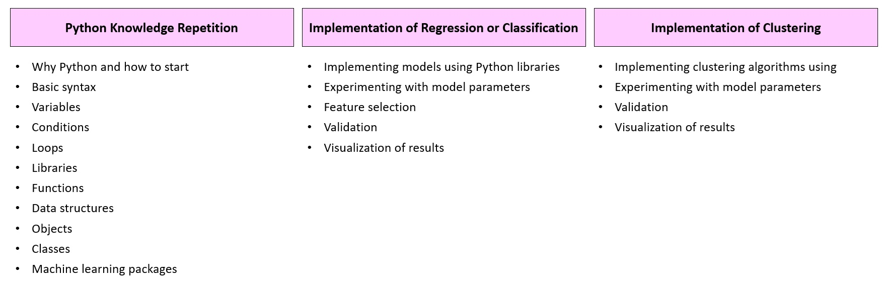

Exercises#
Teacher:#
Dr. Saeid Haji-Aghajany: email: saeid.haji-aghajany@upwr.edu.pl
Subjects#
Three parts:
Why We Use Python for Machine Learning?#
Simplicity and Readability
Python’s clean syntax makes code easy to read and write, enhancing productivity and collaboration among developers
Extensive libraries and frameworks
With libraries like TensorFlow, Scikit-learn, and Pandas, Python provides powerful tools for machine learning and data analysis, simplifying complex tasks
Cross-platform compatibility
Python runs seamlessly on Windows, macOS, and Linux, allowing developers to work across different operating systems without issues
Scaling and Performance
Python supports efficient scaling through frameworks like Dask and TensorFlow, enabling the handling of large datasets and complex computations effectively
Starting point#
Download and installation:
Run installer (For Windows, make sure to check the box that says “Add Python to PATH”)
Verify installation in cmd: python –version
Environment
Create a folder as your environment
Open cmd and go to your environment: cd C:\path\to\your\directory
Confirm the python version python –version
Create the environment: python -m venv “name of your environment”
Active your environment: myenv\Scripts\activate
Confirm python version python –version
Install notebook: pip install notebook ipykernel
Selecting a Platform:
VS Code
PyCharm
Spyder
Atom
Thonny
Google Colab
…
Download VS Code and installation:
Install the Python extension in VS Code.
Install the Jupyter extension in VS Code.
Create a new Jupyter notebook through the command palette.
Select the Python interpreter.
Basic Syntax#
print('Hello Artificial Intelligence !') # This will be executed first
print(5 + 10)
y = 20 * 5
z = 20 / 5
# Printing the result
print(y)
print(z)
print("Total:", y+z)
# Asking for user input
user_name = input("Please enter your name: ")
print("Hello, " + user_name + "!")
# Asking for numeric input
user_age = input("Please enter your age: ")
user_age = int(user_age) # Convert string input to an integer
print("You are " + str(user_age) + " years old!")
# Asking for multiple inputs
user_name = input("Please enter your name: ")
favorite_color = input("What is your favorite color? ")
user_age = input("Please enter your age: ")
user_age = int(user_age) # Convert string input to an integer
print(f"Your name is {user_name}, Your favorite color is {favorite_color}, and you are {user_age} years old!")
Hello Artificial Intelligence !
15
100
4.0
Total: 104.0
---------------------------------------------------------------------------
StdinNotImplementedError Traceback (most recent call last)
Input In [1], in <cell line: 12>()
9 print("Total:", y+z)
11 # Asking for user input
---> 12 user_name = input("Please enter your name: ")
13 print("Hello, " + user_name + "!")
15 # Asking for numeric input
File C:\ProgramData\Anaconda3\lib\site-packages\ipykernel\kernelbase.py:1072, in Kernel.raw_input(self, prompt)
1065 """Forward raw_input to frontends
1066
1067 Raises
1068 ------
1069 StdinNotImplementedError if active frontend doesn't support stdin.
1070 """
1071 if not self._allow_stdin:
-> 1072 raise StdinNotImplementedError(
1073 "raw_input was called, but this frontend does not support input requests."
1074 )
1075 return self._input_request(
1076 str(prompt),
1077 self._parent_ident["shell"],
1078 self.get_parent("shell"),
1079 password=False,
1080 )
StdinNotImplementedError: raw_input was called, but this frontend does not support input requests.
Variables#
# Integer variable (whole number)
age = 25
print("Age:", age)
# Float variable (decimal number)
height = 5.9
print("Height:", height)
# String variable (text)
name = "Alice"
print("Name:", name)
# Boolean variable (True or False)
is_student = True
print("Is Student:", is_student)
# List variable (ordered, mutable collection)
fruits = ["apple", "banana", "cherry"]
print("Fruits:", fruits)
# Tuple variable (ordered, immutable collection)
coordinates = (10.0, 20.0)
print("Coordinates:", coordinates)
# Dictionary variable (key-value pairs)
person = {"name": "Alice", "age": 25, "is_student": False}
print("Person Info:", person)
# Modifying variables
age += 1
fruits.append("orange")
print("Updated Age:", age) # Output: 26
print("Updated Fruits:", fruits)
# Accessing dictionary values
print("\nPerson's Name:", person["name"])
# Combining different types of variables in a string
greeting = f"Hello, my name is {name}. I am {age} years old and I am {height} feet tall."
print("\nGreeting:", greeting)
Conditions#
x = 7
# Check if x is equal to 7
if x == 7:
print("x is equal to 7")
else:
# This block executes if the above condition (x == 7) is false
print("x is not equal to 7")
# Check if x is not equal to 10
if x != 10:
print("x is not equal to 10")
else:
# This block executes if the above condition (x != 10) is false
print("x is equal to 10")
# Check if x is between 5 and 10
if 5 < x < 10: # Simplified condition
print("x is greater than 5 and less than 10")
else:
# This block executes if the above condition (5 < x < 10) is false
print("x is not between 5 and 10")
# Logical OR with elif
if x <= 5:
# This block executes if x is less than or equal to 5
print("x is less than or equal to 5")
elif x >= 8:
# This block executes if the first condition (x <= 5) is false
# and this condition (x >= 8) is true
print("x is greater than or equal to 8")
else:
# This block executes if both the previous conditions are false
print("x is between 6 and 7")
# Check if x is not equal to 10
if not x == 10:
print("x is not equal to 10")
else:
print("x is equal to 10")
Loop -> for#
# Basic for loop
numbers = [1, 2, 3, 4, 5]
for num in numbers:
print(num)
# Using range()
for i in range(5): # Iterates from 0 to 4
print("Iteration:", i)
# Multiplication table
for i in range(1, 6): # Outer loop for rows
for j in range(1, 6): # Inner loop for columns
print(i * j, end="\t") # Print product with a tab space
print() # New line after each row
# For loop with break and continue
for i in range(10):
if i == 5:
continue # Skip 5
if i == 8:
break # Exit the loop
print(i)
Loop -> while#
# Basic while loop
count = 5
while count > 0:
print(count)
count -= 1 # Decrement count by 1
print("Blast off!")
# User input until valid input
user_input = ""
while user_input.lower() != "exit":
user_input = input("Type 'exit' to quit: ")
print("You entered:", user_input)
balance = 1000
while True:
choice = input("\n1. Check Balance\n2. Deposit\n3. Withdraw\n4. Exit\nChoose (1-4): ")
if choice == '1':
print(f"Balance: ${balance}")
elif choice == '2':
balance += max(0, float(input("Deposit amount: ")))
elif choice == '3':
balance -= min(balance, max(0, float(input("Withdraw amount: "))))
elif choice == '4':
break
else:
print("Invalid choice!")
# Initialize the quiz running state
running = True
score = 0
# Predefined number pairs for the quiz
number_pairs = [(1, 2), (3, 4), (5, 6), (7, 8), (9, 10)]
# Start the quiz
while running:
print("\nWelcome to the Arithmetic Quiz!")
print("Choose the operation:")
print("1. Addition")
print("2. Subtraction")
print("3. Multiplication")
print("4. Exit the quiz")
# Get user choice for operation
choice = input("Enter your choice (1-4): ")
# Check for exit condition
if choice == '4':
print("Thank you for participating!")
break # Exit the quiz
#if choice == '4':
# print("Thank you for participating!")
#running = False # Set running to False to exit the quiz
#continue # Exit the current loop iteration
# Validate input for operation choice
if choice not in ['1', '2', '3']:
print("Invalid choice. Please select a valid option.")
continue # Restart the loop for a valid choice
# Ask the user how many questions they want
num_questions = input("How many questions do you want to answer? ")
try:
num_questions = int(num_questions) # Convert input to an integer
except ValueError:
print("Please enter a valid number for questions.")
continue # Restart the loop
# Ensure the number of questions does not exceed available pairs
if num_questions > len(number_pairs):
print(f"Sorry, you can only answer up to {len(number_pairs)} questions.")
continue
# Generate questions based on the user's choice
for i in range(num_questions):
num1, num2 = number_pairs[i] # Get predefined pairs
if choice == '1':
correct_answer = num1 + num2
user_answer = int(input(f"What is {num1} + {num2}? "))
elif choice == '2':
correct_answer = num1 - num2
user_answer = int(input(f"What is {num1} - {num2}? "))
elif choice == '3':
correct_answer = num1 * num2
user_answer = int(input(f"What is {num1} * {num2}? "))
# Check user's answer
if user_answer == correct_answer:
print("Correct!")
score += 1 # Increment score for a correct answer
else:
print(f"Wrong! The correct answer is {correct_answer}.")
print(f"Your current score is: {score} out of {num_questions}.") # Show score after each round
Libraries#
Standard libraries
Python documentation
Third-Party libraries
Installing libraries
Open cmd and go to your environment: cd C:\path\to\your\directory
Active your environment: myenv\Scripts\activate
Installing intended libraries: pip install “library_name”
import math
# Calculate the square root of 16
result = math.sqrt(16)
print("The square root of 16 is:", result)
import random
# Generate a random integer between 1 and 10
random_number = random.randint(1, 10)
print("Random number between 1 and 10:", random_number)
import numpy as np
# Create a NumPy array
array = np.array([1, 2, 3, 4, 5])
# Calculate the mean
mean_value = np.mean(array)
print("Mean value of the array:", mean_value)